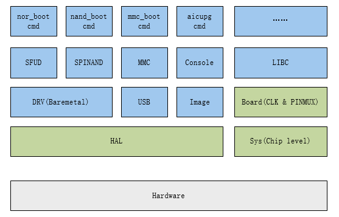

设计说明
15 Jan 2024
Read time: 1 minute(s)
源码说明
| Sys | bsp/artinchip/sys/<chip>/ | SoC 初始化相关代码，与应用共用 |
| Board | target/<chip>/<board>/ | 板子初始化相关代码，与应用共用 |
| HAL | bsp/artinchip/hal/ | HAL 驱动代码，与应用共用 |
| Boot | application/baremetal/bootloader/ | Bootloader 代码 |
软件架构
Luban-Lite 使用 tinySPL 作为启动引导程序 (Bootloader)，可以实现加载启动应用程序、 烧录和升级等功能。
tinySPL 是基于 Luban-Lite 的 HAL 构建的裸机 (Baremetal) 程序。

上图中， HAL 、 Board 、 Sys 与 Luban-Lite SDK 中的应用程序共用同一份代码， 以简化 Boot 对不同板子的支持。
由于 Boot 的功能和应用场景比较确定和单一，因此这里将 Boot 设计为一个 Baremetal 版本的应用，具有以下特点：
-
与应用共用部分代码，简化开发和板级配置
-
无线程、无中断处理，只针对单一任务
-
支持命令行模式，可根据需要，定义不同的命令
关键流程
-
系统初始化
_start //bsp/artinchip/sys/d21x/startup_gcc.S |-> save_boot_params // bsp/artinchip/sys/d21x/boot_param_gcc.S |-> icache_enable(); |-> dcache_enable(); // bsp/artinchip/sys/d21x/system.c |-> SystemInit(); |-> main(); // application/baremetal/bootloader/main.c |-> board_init(); | |-> heap_init(); | |-> aic_board_sysclk_init(); // target/d21x/<board>/board.c | |-> aic_board_pinmux_init(); | |-> uart_init(cons_uart); | |-> stdio_set_uart(cons_uart); |-> console_init();系统初始化的过程中，并不会设计不必要的驱动等模块的初始化。所有的驱动和模块， 都只在需要使用时进行初始化，这样可以减少启动过程中的不必要时间消耗，加快启动速度。
-
启动和升级
main(); // application/baremetal/bootloader/main.c |-> board_init(); |-> console_init(); |-> bd = aic_get_boot_device(); | // 根据启动参数，判断当前的启动设备 | |-> console_set_bootcmd("nor_boot"); | // 此处根据 boot_device 的类型，设置不同的 bootcmd，比如 aicupg usb 0 | |-> console_loop(); |-> console_run_cmd(g_console->bootcmd); |-> _console_loop(g_console); // 当执行 bootcmd 失败时，会进入串口控制台，等待用户交互